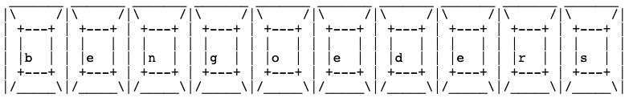

Ben Goeders
Education:
Bachelor of Science in Computer Engineering – Iowa State University: August 2025 - Present
• GPA: 3.2
• Expected graduation: May 2029
• Activities and clubs: Theme Park engineering and design club, jazz band, orchestra
• Relevant coursework: Introduction to Data Structures, Calculus II, Linear Algebra and Matrices
Projects:
Programmable RGB Stage Light: Active Development
• Developing embedded C++ firmware for Arduino microcontrollers to enable user-controllable lighting effects
• Designing manufacturable chassis using Fusion 360 to integrate electrical and mechanical components
• Applying iterative prototyping, testing, and debugging to refine hardware/software integration
Portfolio Website: Active Development
• Developing a personal portfolio website to document my engineering progress and projects
• Employing HTML programming practices as well as network configuration and hosting
Work Experience:
On-Demand Team Member – Target: July 2025 - Present
• Provide quality guest service across many departments, assisting dozens of guests per shift
• Adapt quickly to new work centers to support changing operational needs
• Maintain a positive guest experience during high-traffic seasons by efficiently running checkouts and order pickups
Seasonal Guest Advocate – Target: July 2023 - January 2024
• Assisted guests efficiently and accurately with in-store purchases and online orders
• Collaborated with other team members to maintain efficient and quality operations
• Balanced work responsibilities with education and extracurriculars
Skills:
• Programming: Java, Python, C, Embedded C++
• CAD and Drafting: Fusion 360, Revit
• Tools: Google Suite, Microsoft Office